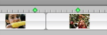

Using bookmarks
You can place bookmarks in the timeline viewer to mark important frames in your video or audio. You can then jump from bookmark to bookmark using keyboard shortcuts, similar to using the Tab key to jump from point to point in a word-processing document. Bookmarks look like green diamonds.

- To place a bookmark, position the playhead where you want the bookmark, and choose Markers > Add Bookmark or press Command-B.
- To move to the next bookmark, choose Markers > Next Bookmark or press Command-].
- To move to the previous bookmark, choose Markers > Previous Bookmark or press Command-[.
To remove a bookmark, click it in the timeline viewer, and then choose Markers > Delete Bookmark. If you want to remove all the bookmarks from your movie, choose Markers > Delete All Bookmarks.
If you move a clip, the bookmarks don't move with it.
 Was this page helpful? Send feedback.
Was this page helpful? Send feedback.